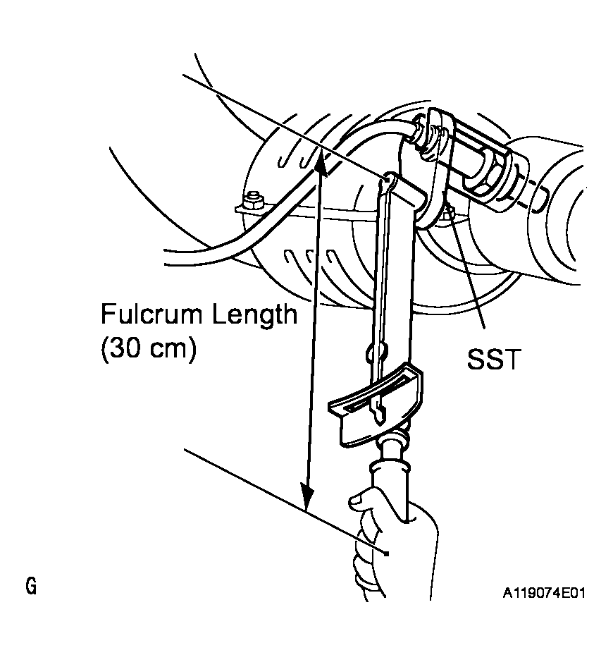
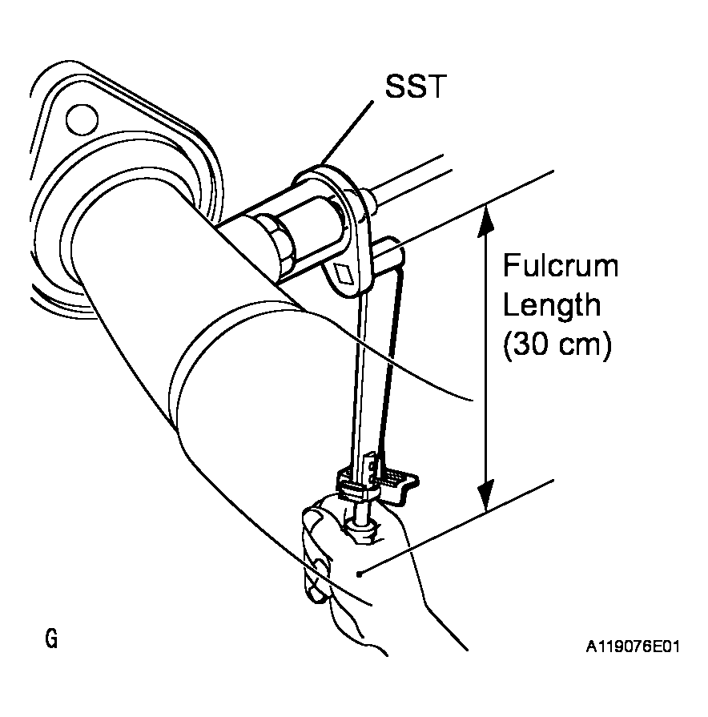
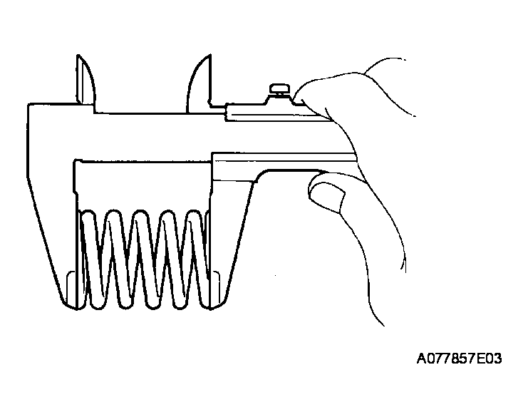

Exhaust Pipe: Installation
- INSTALL HEATED OXYGEN SENSOR (for Bank 1 Sensor 2)
- Using SST, install the sensor to the front exhaust pipe.

Courtesy of © TOYOTA, LICENSE AGREEMENT TMS1002SST 09224-00010
Torque: 40 N*m (408 kgf*cm, 30 ft.*lbf) for use with SST
44 N*m (449 kgf*cm, 32 ft.*lbf) for use without SST
HINT:
Use a torque wrench with a fulcrum length of 30 cm (11.81 in.).
- Using SST, install the sensor to the front exhaust pipe.
- REMOVE HEATED OXYGEN SENSOR (for Bank 1 Sensor 1)
- Using SST, install the sensor to the front exhaust pipe.

Courtesy of © TOYOTA, LICENSE AGREEMENT TMS1002SST 09224-00010
Torque: 40 N*m (408 kgf*cm, 30 ft.*lbf) for use with SST
44 N*m (449 kgf*cm, 32 ft.*lbf) for use without SST
HINT:
Use a torque wrench with a fulcrum length of 30 cm (11.81 in.).
- Using SST, install the sensor to the front exhaust pipe.
- INSTALL FRONT EXHAUST PIPE
- Using a vernier caliper, measure the free length of the compression spring.

Courtesy of © TOYOTA, LICENSE AGREEMENT TMS1002Minimum length: 40.5 mm (1.594 in.)
If the length is less than the minimum, replace the compression spring.
- Using a plastic-faced hammer and wooden block, tap in a new gasket until its surface is flush with the exhaust manifold.
NOTE:
- Tap in the gasket in the correct direction.
- Do not reuse the removed gasket.
- Do not to push in the gasket while installing the exhaust pipe.
- Connect the 2 exhaust pipe supports, and install the exhaust pipe.
- Install the 2 compression springs and 2 bolts.
Torque: 43 N*m (438 kgf*cm, 32 ft.*lbf)
- Connect the 2 heated oxygen sensor connectors.
- Install the grommet.
- Using a vernier caliper, measure the free length of the compression spring.
- INSTALL TAILPIPE
- Install a new gasket onto the front exhaust pipe.
- Connect the 2 exhaust pipe supports, and install the tailpipe.
- Install the clamp with the bolt as shown in the illustration.
Torque: 32 N*m (326 kgf*cm, 24 ft.*lbf)
- CHECK FOR EXHAUST GAS LEAKS
- INSTALL FRONT PANEL BRACE
- Install the floor panel brace with the 2 bolts.
Torque: 20 N*m (204 kgf*cm, 14 ft.*lbf)
- Install the floor panel brace with the 2 bolts.
- INSTALL REAR CONSOLE BOX (See INSTALLATION )
- INSTALL SHIFT LEVER KNOB (for Manual Transaxle)
- CONNECT CABLE TO NEGATIVE BATTERY TERMINAL